Du7 Technology Services
A WhatsApp trip log for drivers in the Netherlands, a request queue for ad teams in Brazil, and a shelf of open-source tools. Built and run by one engineer in the Netherlands, from Raspberry Pi to AWS.
Products
Run by Du7 on its own servers in the Netherlands. The maker answers the email.
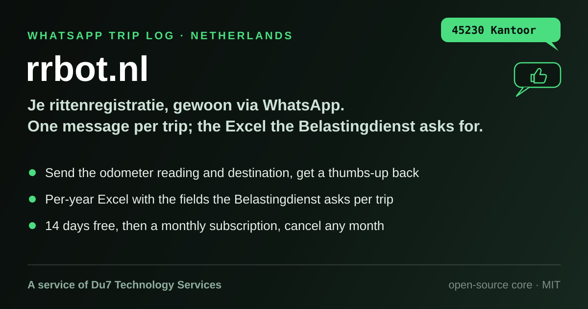
rrbot.nl
A trip log (rittenregistratie) for people who drive a company car in the Netherlands. After each trip you message the odometer reading and destination; the bot answers with a thumbs-up and, when you ask, sends the year's Excel with exactly the fields the Belastingdienst wants per trip. Fourteen days free, then a monthly subscription you can cancel any month. The core is the open-source rittenregistratie-bot below.
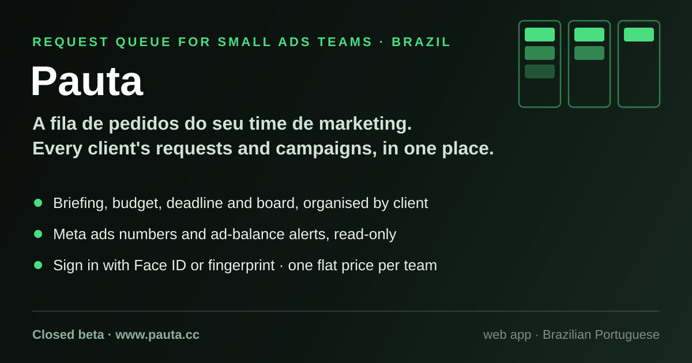
Pauta
The request queue for small Brazilian teams that run Meta ads for several clients. Whoever talks to the client files the request with briefing, budget and deadline; whoever runs the ads moves it across the board, and each client's campaigns, ad balance and monthly payment sit on the same page. Sign-in by passkey, by invitation. In Brazilian Portuguese, in closed beta at pauta.cc.
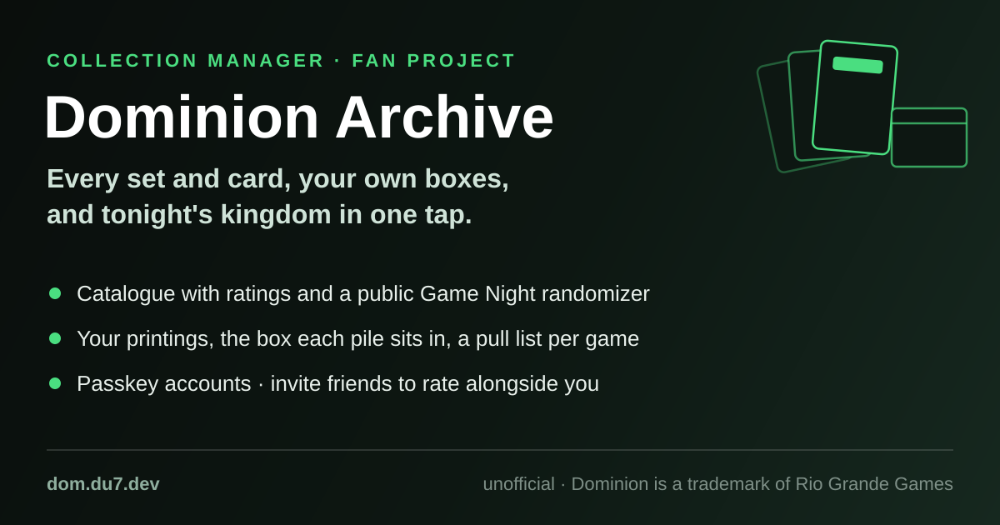
Dominion Archive
A catalogue of every Dominion set and card, with ratings and a Game Night randomizer anyone can use. With an account it also tracks the printings you own, which box each pile sits in, and the pull list for tonight's kingdom. Accounts are passkeys; friends join by invite and rate alongside you. A fan project, unaffiliated with Rio Grande Games.
Open source
The tools behind the products, and the ones built along the way. All on GitHub.
Automation & assistants
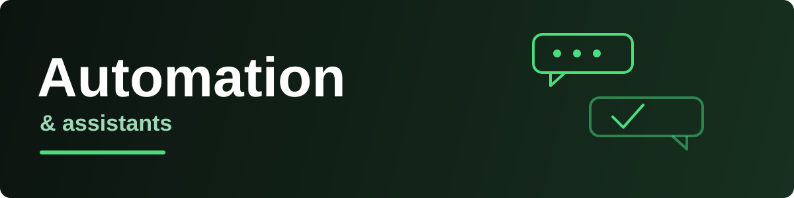
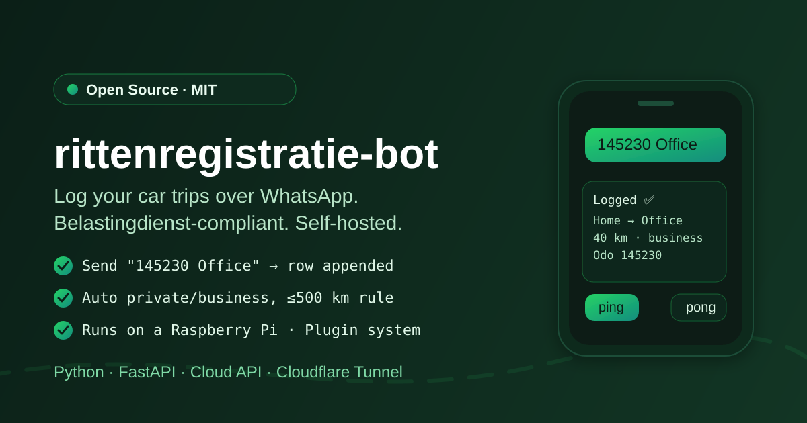
rittenregistratie-bot
The open-source core of rrbot.nl: a self-hosted WhatsApp bot that keeps a Belastingdienst-compliant trip log for one or more cars in an append-only ledger and generates the per-year Excel on request. It never invents or reclassifies a trip. A companion plugin logs trips from Home Assistant when the car's ignition goes off. Runs comfortably on a Raspberry Pi.
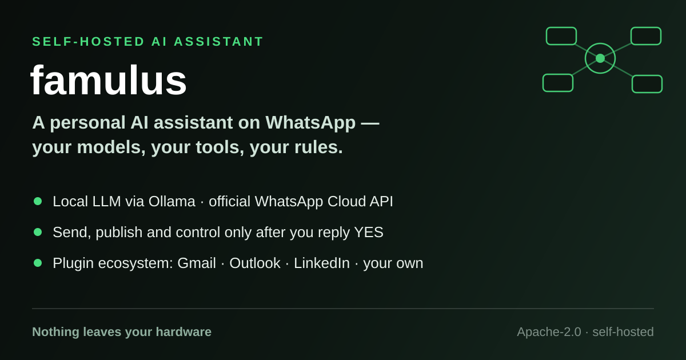
famulus
A self-hosted personal AI assistant reached over WhatsApp, running on your own hardware: a local LLM through Ollama, web search via your own SearXNG, and plugins for Gmail, Outlook, Home Assistant, LinkedIn, Overseerr and whatever you write yourself. Anything that sends, publishes or changes state waits for your explicit confirmation first.
IoT & edge
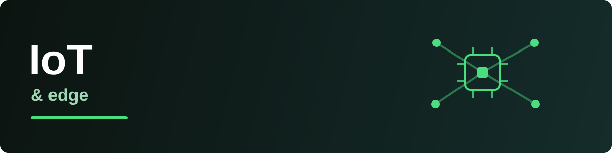
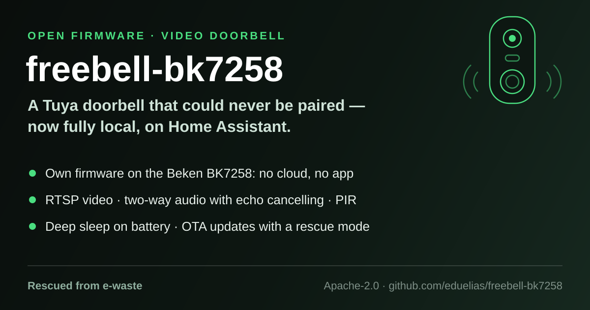
freebell-bk7258
Open firmware for a Tuya video doorbell that shipped without a licence and could never be paired. Replaces TuyaOS with a fully local stack: ring and motion events to Home Assistant, RTSP video, two-way audio with echo cancellation, deep sleep on battery, microSD, and over-the-air updates protected by a boot-loop rescue mode.
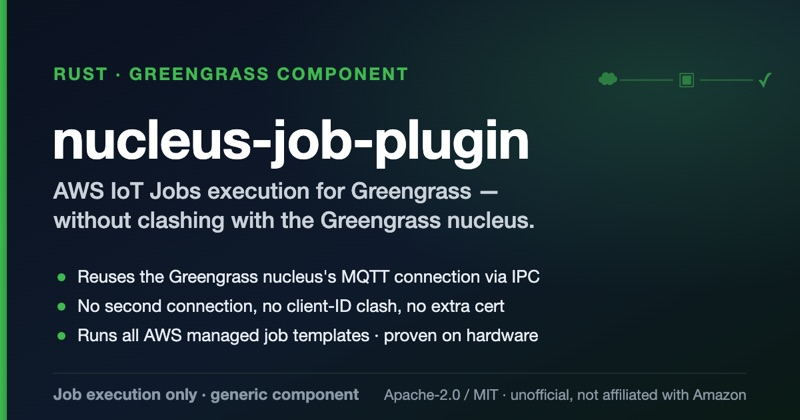
nucleus-job-plugin
An unofficial Rust runner for AWS IoT Jobs on Greengrass devices. Picks up queued jobs, runs allow-listed handlers, and reports status back to the cloud — reaching IoT Core through the nucleus's own connection, as a standalone generic component.
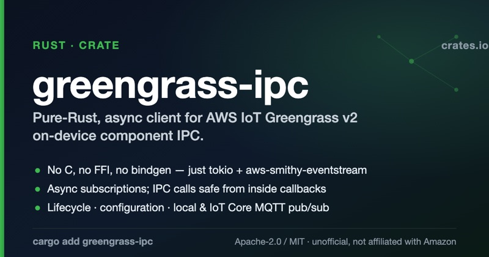
greengrass-ipc
A pure-Rust, async client for AWS IoT Greengrass v2 component IPC. No C, no FFI — just tokio and typed operations, including ones the official bindings are missing. Safe to call from inside subscription callbacks, where the official SDK is not.
Developer tools
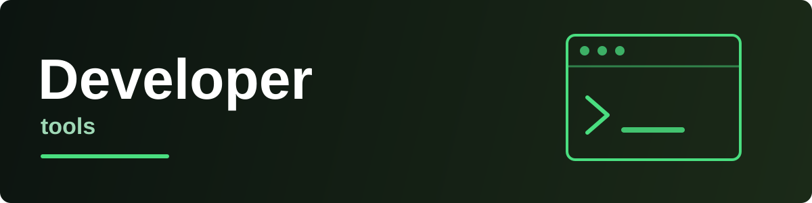
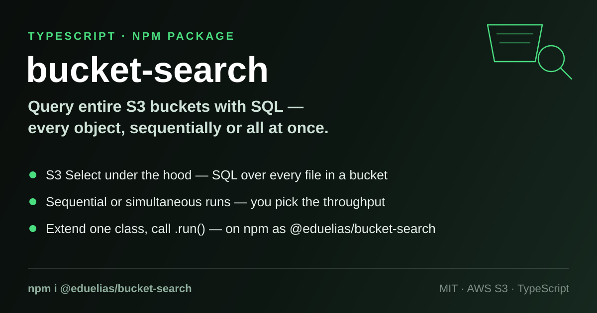
bucket-search
An npm package that runs SQL queries across entire S3 buckets using S3 Select —
file by file or simultaneously. Extend one class, call .run(). Published
as @eduelias/bucket-search.
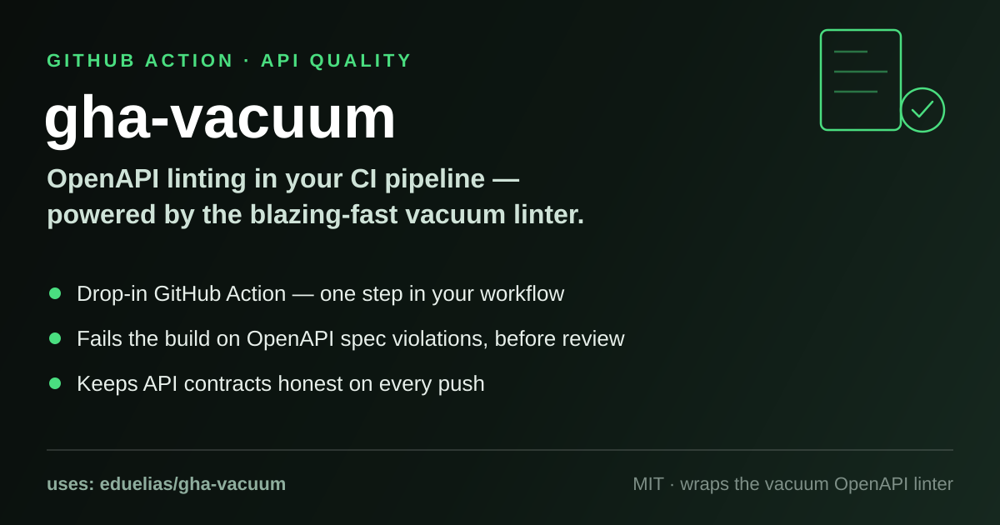
gha-vacuum
A GitHub Action that runs the vacuum OpenAPI linter on your specs in CI — failing the build on contract violations before they ever reach code review.
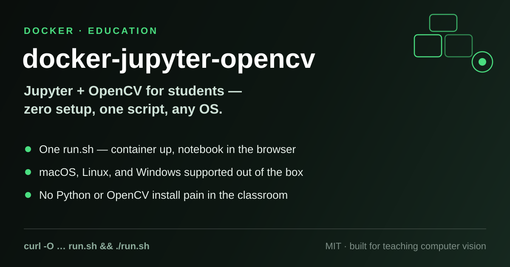
docker-jupyter-opencv
A zero-setup Docker container with Jupyter and OpenCV, built for students — run one script and the notebook is in your browser, on macOS, Linux, or Windows.
Also on GitHub: rittenregistratie-homeassistant, the Home Assistant plugin that logs a trip when the ignition goes off, and valheim-character-worlds, a Valheim mod that shows every world a character has played on the character select screen (on Thunderstore). Longer write-ups are on the engineering blog.